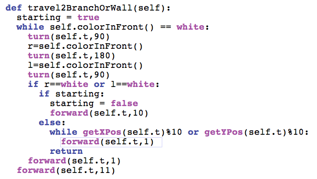
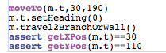

Create a maze with Test Driven Development.
CSI 106 Muhlenberg College - Michael Toth
Page 11
This is the minimal amount of code to make that test pass.

Now we want to deal with the case where we have a branch before a wall occurs.
Face the turtle north and predict it will stop at the branch.

Previous Page
Next Page